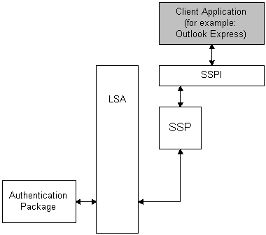

Noninteractive authentication can only be used after an interactive authentication has taken place. During noninteractive authentication, the user does not input logon data, instead, previously established credentials are used.
Noninteractive authentication is performed when an application uses the Security Support Provider Interface (SSPI) and a security package to establish a secure network connection. Noninteractive authentication is the mechanism at work when a user connects to multiple machines on a network without having to re-enter logon information for each machine. For example, if an application needs to open a secure folder on a remote machine and the application user is already interactively logged on to a domain account, the application does not require the user to supply logon data again. Instead, the application can request a noninteractive authentication by using SSPI to pass the previously established security information to a security package. The security package then uses LSA functions to check the credentials. The following diagram illustrates this procedure.

In the preceding diagram, the client application initiates a call to SSPI to request an authenticated network connection. SSPI passes the client's request to a security package for processing. The security package authenticates the user by calling the Local Security Authority (LSA) and specifying an authentication package and providing the user's existing credentials.
The authentication result is passed from the authentication package, through the LSA, to the security package, and finally to SSPI. SSPI notifies the client application about the outcome of the request.
For more information about SSPI, see Security Support Provider Interface.
Â
Â